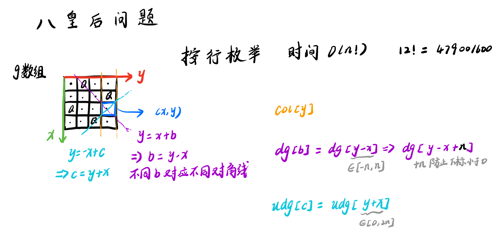

https://www.luogu.com.cn/training/112
[USACO1.5]八皇后 Checker Challenge
题目描述
一个如下的

上面的布局可以用序列
行号
列号
这只是棋子放置的一个解。请编一个程序找出所有棋子放置的解。
并把它们以上面的序列方法输出，解按字典顺序排列。
请输出前
输入格式
一行一个正整数
输出格式
前三行为前三个解，每个解的两个数字之间用一个空格隔开。第四行只有一个数字，表示解的总数。
样例 #1
样例输入 #1
16
样例输出 #1
xxxxxxxxxx412 4 6 1 3 523 6 2 5 1 434 1 5 2 6 344
提示
【数据范围】
对于
题目翻译来自NOCOW。
USACO Training Section 1.5
x1
3using namespace std;4const int N = 15;5int n, cnt, a[N], sum;6bool col[N], dg[N * 2], udg[N * 2];7
8void dfs(int u) {9 if (u == n + 1) {10 if (cnt < 3) {11 for (int i = 1; i <= n; ++i) printf("%d ", a[i]);12 cout << endl;13 cnt++;14 }15 sum++;16 return;17 }18 for (int i = 1; i <= n; ++i) {19 if (!col[i] && !dg[u + i] && !udg[n - u + i]) {20 col[i] = true;21 dg[u + i] = true;22 udg[n - u + i] = true;23 a[u] = i;24 dfs(u + 1);25 col[i] = false;26 dg[u + i] = false;27 udg[n - u + i] = false;28 }29 }30}31
32int main() {33 cin >> n;34 dfs(1);35 cout << sum;36 return 0;37} 注意对角线数组要开至少两倍大小
左下到右上dg[u + i]
左上到右下udg[n - u + i]
其中u是枚举的行数，i是列号

kkksc03考前临时抱佛脚
题目背景
kkksc03 的大学生活非常的颓废，平时根本不学习。但是，临近期末考试，他必须要开始抱佛脚，以求不挂科。
题目描述
这次期末考试，kkksc03 需要考
kkksc03 有一个能力，他的左右两个大脑可以同时计算
由于 kkksc03 还急着去处理洛谷的 bug，因此他希望尽快把事情做完，所以他希望知道能够完成复习的最短时间。
输入格式
本题包含
第
第
第
第
输出格式
输出一行,为复习完毕最短时间。
样例 #1
样例输入 #1
xxxxxxxxxx511 2 1 32534 34652 4 3
样例输出 #1
xxxxxxxxxx1120
提示
xxxxxxxxxx731
3using namespace std;4const int N = 25;5int t1[N], t2[N], t3[N], t4[N], s1, s2, s3, s4;6int m1 = 1e9, m2 = 1e9, m3 = 1e9, m4 = 1e9;7int tt1, tt2;8
9void dfs1(int u) {10 if (u == s1) {11 m1 = min(m1, max(tt1, tt2));12 return;13 }14 tt1 += t1[u];15 dfs1(u + 1);16 tt1 -= t1[u];17 tt2 += t1[u];18 dfs1(u + 1);19 tt2 -= t1[u];20}21
22void dfs2(int u) {23 if (u == s2) {24 m2 = min(m2, max(tt1, tt2));25 return;26 }27 tt1 += t2[u];28 dfs2(u + 1);29 tt1 -= t2[u];30 tt2 += t2[u];31 dfs2(u + 1);32 tt2 -= t2[u];33}34
35void dfs3(int u) {36 if (u == s3) {37 m3 = min(m3, max(tt1, tt2));38 return;39 }40 tt1 += t3[u];41 dfs3(u + 1);42 tt1 -= t3[u];43 tt2 += t3[u];44 dfs3(u + 1);45 tt2 -= t3[u];46}47
48void dfs4(int u) {49 if (u == s4) {50 m4 = min(m4, max(tt1, tt2));51 return;52 }53 tt1 += t4[u];54 dfs4(u + 1);55 tt1 -= t4[u];56 tt2 += t4[u];57 dfs4(u + 1);58 tt2 -= t4[u];59}60
61int main() {62 cin >> s1 >> s2 >> s3 >> s4;63 for (int i = 0; i < s1; ++i) cin >> t1[i];64 for (int i = 0; i < s2; ++i) cin >> t2[i];65 for (int i = 0; i < s3; ++i) cin >> t3[i];66 for (int i = 0; i < s4; ++i) cin >> t4[i];67 dfs1(0);68 dfs2(0);69 dfs3(0);70 dfs4(0);71 cout << m1 + m2 + m3 + m4;72 return 0;73}对于每个习题集都单独进行DFS搜索
马的遍历
题目描述
有一个
输入格式
输入只有一行四个整数，分别为
输出格式
一个
样例 #1
样例输入 #1
xxxxxxxxxx113 3 1 1
样例输出 #1
xxxxxxxxxx310 3 223 -1 132 1 4
提示
数据规模与约定
对于全部的测试点，保证
xxxxxxxxxx401
3using namespace std;4typedef pair<int, int> PII;5const int N = 410;6int n, m, g[N][N], x, y;7int dx[8] = {-2, -2, -1, -1, 1, 1, 2, 2};8int dy[8] = {1, -1, 2, -2, 2, -2, 1, -1};9bool st[N][N];10
11void bfs(int x, int y) {12 st[x][y] = true;13 queue<PII> q;14 q.push({x, y});15 while (q.size()) {16 auto t = q.front();17 q.pop();18 for (int i = 0; i < 8; ++i) {19 int xx = t.first + dx[i], yy = t.second + dy[i];20 if (xx >= 1 && yy >= 1 && xx <= n && yy <= m && !st[xx][yy]) {21 st[xx][yy] = true;22 g[xx][yy] = g[t.first][t.second] + 1;23 q.push({xx, yy});24 }25 }26 }27}28
29int main() {30 cin >> n >> m >> x >> y;31 bfs(x, y);32 for (int i = 1; i <= n; ++i) {33 for (int j = 1; j <= m; ++j) {34 if (st[i][j]) printf("%d ", g[i][j]);35 else printf("-1 ");36 }37 cout << endl;38 }39 return 0;40}宽度优先搜索
奇怪的电梯
题目描述
呵呵，有一天我做了一个梦，梦见了一种很奇怪的电梯。大楼的每一层楼都可以停电梯，而且第
输入格式
共二行。
第一行为三个用空格隔开的正整数，表示
第二行为
输出格式
一行，即最少按键次数，若无法到达，则输出 -1。
样例 #1
样例输入 #1
xxxxxxxxxx215 1 523 3 1 2 5
样例输出 #1
xxxxxxxxxx113
提示
对于
xxxxxxxxxx381
3using namespace std;4const int N = 210;5int n, a, b, t[N], dist[N];6bool st[N];7
8void bfs(int u) {9 queue<int> q;10 q.push(u);11 st[u] = true;12 while (q.size()) {13 int tt = q.front();14 q.pop();15 int tar = tt + t[tt];16 if (tar <= n && !st[tar]) {17 q.push(tar);18 st[tar] = true;19 dist[tar] = dist[tt] + 1;20 }21 tar = tt - t[tt];22 if (tar >= 1 && !st[tar]) {23 q.push(tar);24 st[tar] = true;25 dist[tar] = dist[tt] + 1;26 }27 }28 if (st[b]) cout << dist[b];29 else cout << "-1";30}31
32int main() {33 cin >> n >> a >> b;34 for (int i = 1; i <= n; ++i) cin >> t[i];35 if (a == b) cout << "0";36 else bfs(a);37 return 0;38}宽度优先搜索
[USACO08FEB]Meteor Shower S
题面翻译
题目描述
贝茜听说一场特别的流星雨即将到来：这些流星会撞向地球，并摧毁它们所撞击的任何东西。她为自己的安全感到焦虑，发誓要找到一个安全的地方（一个永远不会被流星摧毁的地方）。
如果将牧场放入一个直角坐标系中，贝茜现在的位置是原点，并且，贝茜不能踏上一块被流星砸过的土地。
根据预报，一共有
贝茜在时刻
请你计算一下，贝茜最少需要多少时间才能到达一个安全的格子。如果不可能到达输出
输入格式
共
输出格式
贝西到达安全地点所需的最短时间，如果不可能，则为
题目描述
Bessie hears that an extraordinary meteor shower is coming; reports say that these meteors will crash into earth and destroy anything they hit. Anxious for her safety, she vows to find her way to a safe location (one that is never destroyed by a meteor) . She is currently grazing at the origin in the coordinate plane and wants to move to a new, safer location while avoiding being destroyed by meteors along her way.
The reports say that M meteors (1 ≤ M ≤ 50,000) will strike, with meteor i will striking point (Xi, Yi) (0 ≤ Xi ≤ 300; 0 ≤ Yi ≤ 300) at time Ti (0 ≤ Ti ≤ 1,000). Each meteor destroys the point that it strikes and also the four rectilinearly adjacent lattice points.
Bessie leaves the origin at time 0 and can travel in the first quadrant and parallel to the axes at the rate of one distance unit per second to any of the (often 4) adjacent rectilinear points that are not yet destroyed by a meteor. She cannot be located on a point at any time greater than or equal to the time it is destroyed).
Determine the minimum time it takes Bessie to get to a safe place.
输入格式
* Line 1: A single integer: M
* Lines 2..M+1: Line i+1 contains three space-separated integers: Xi, Yi, and Ti
输出格式
* Line 1: The minimum time it takes Bessie to get to a safe place or -1 if it is impossible.
样例 #1
样例输入 #1
xxxxxxxxxx51420 0 232 1 241 1 250 3 5
样例输出 #1
xxxxxxxxxx115
xxxxxxxxxx791
3using namespace std;4typedef pair<int, int> PII;5const int N = 310, M = 5e4 + 10;6int m, dist[N][N];// dist 其实表示时间7bool st[N][N], never[N][N];// st 表示某个时刻被砸的位置 never 表示永远安全的位置8int dx[4] = {1, 0, 0, -1};9int dy[4] = {0, 1, -1, 0};10
11struct H {12 int x, y, t;13 bool operator<(const H &W) const {14 return t < W.t;15 }16} h[M];17
18void bfs() {19 int index = 0;20 while (h[index].t <= 0) {21 st[h[index].x][h[index].y] = false;22 for (int j = 0; j < 4; ++j) {23 int x = h[index].x + dx[j];24 int y = h[index].y + dy[j];25 if (x >= 0 && y >= 0) st[x][y] = false;26 }27 index++;28 }29 queue<PII> q;30 q.push({0, 0});31 while (q.size()) {32 auto v = q.front();33 q.pop();34
35 if (never[v.first][v.second]) {36 cout << dist[v.first][v.second];37 return;38 }39
40 while (index < m && h[index].t <= dist[v.first][v.second]) {41 st[h[index].x][h[index].y] = false;42 for (int j = 0; j < 4; ++j) {43 int x = h[index].x + dx[j];44 int y = h[index].y + dy[j];45 if (x >= 0 && y >= 0) st[x][y] = false;46 }47 index++;48 }49
50 if (st[v.first][v.second]) st[v.first][v.second] = false;51 else continue;52
53 for (int i = 0; i < 4; ++i) {54 int x = v.first + dx[i], y = v.second + dy[i];55 if (x >= 0 && y >= 0 && st[x][y]) {56 q.push({x, y});57 dist[x][y] = dist[v.first][v.second] + 1;58 }59 }60 }61 cout << "-1";62}63
64int main() {65 cin >> m;66 memset(never, true, sizeof never);67 memset(st, true, sizeof st);68 for (int i = 0; i < m; ++i) {69 scanf("%d%d%d", &h[i].x, &h[i].y, &h[i].t);70 never[h[i].x][h[i].y] = false;71 for (int j = 0; j < 4; ++j) {72 int x = h[i].x + dx[j], y = h[i].y + dy[j];73 if (x >= 0 && y >= 0) never[x][y] = false;74 }75 }76 sort(h, h + m);77 bfs();78 return 0;79}宽度优先搜索
这个算法看着复杂，但是实际运行非常快！因为时间复杂度很低！是线性复杂度！
[NOIP2002 普及组] 选数
题目描述
已知
现在，要求你计算出和为素数共有多少种。
例如上例，只有一种的和为素数：
输入格式
第一行两个空格隔开的整数
第二行
输出格式
输出一个整数，表示种类数。
样例 #1
样例输入 #1
xxxxxxxxxx214 323 7 12 19
样例输出 #1
xxxxxxxxxx111
提示
【题目来源】
NOIP 2002 普及组第二题
xxxxxxxxxx361
3using namespace std;4const int N = 25;5int n, k, num, cnt, sum, a[N];6bool st[N];7
8bool check(int num) {9 if (num < 2) return false;10 for (int i = 2; i <= num / i; ++i) {11 if (num % i == 0) return false;12 }13 return true;14}15
16void dfs(int x) {17 if (cnt == k) {18 if (check(num)) sum++;19 return;20 }21 if (x > n) return;22 cnt++;23 num += a[x - 1];24 dfs(x + 1);25 cnt--;26 num -= a[x - 1];27 dfs(x + 1);28}29
30int main() {31 cin >> n >> k;32 for (int i = 0; i < n; i++) cin >> a[i];33 dfs(1);34 cout << sum;35 return 0;36}
[COCI2008-2009#2] PERKET
题目描述
Perket 是一种流行的美食。为了做好 Perket，厨师必须谨慎选择食材，以在保持传统风味的同时尽可能获得最全面的味道。你有
众所周知，美食应该做到口感适中，所以我们希望选取配料，以使得酸度和苦度的绝对差最小。
另外，我们必须添加至少一种配料，因为没有任何食物以水为配料的。
输入格式
第一行一个整数
接下来
输出格式
一行一个整数，表示可能的总酸度和总苦度的最小绝对差。
样例 #1
样例输入 #1
xxxxxxxxxx21123 10
样例输出 #1
xxxxxxxxxx117
样例 #2
样例输入 #2
xxxxxxxxxx31223 835 8
样例输出 #2
xxxxxxxxxx111
样例 #3
样例输入 #3
xxxxxxxxxx51421 732 643 854 9
样例输出 #3
xxxxxxxxxx111
提示
数据规模与约定
对于
说明
本题满分
题目译自 COCI2008-2009 CONTEST #2 PERKET，译者 @mnesia。
xxxxxxxxxx341
3using namespace std;4
5const int N = 13;6int n;7int cnt;8int suan[N], ku[N];9int suandu=1, kudu, minn=2e9;10
11void dfs(int x) {12 if (x > n) {13 if (cnt == 0) return;14 minn = min(minn, abs(suandu - kudu));15 return;16 }17
18 cnt++;19 suandu *= suan[x];20 kudu += ku[x];21 dfs(x + 1);22 cnt--;23 suandu /= suan[x];24 kudu -= ku[x];25 dfs(x + 1);26}27
28int main() {29 cin >> n;30 for (int i = 1; i <= n; i++) cin >> suan[i] >> ku[i];31 dfs(1);32 cout << minn;33 return 0;34}
迷宫
题目描述
给定一个
在迷宫中移动有上下左右四种方式，每次只能移动一个方格。数据保证起点上没有障碍。
给定起点坐标和终点坐标，每个方格最多经过一次，问有多少种从起点坐标到终点坐标的方案。
输入格式
第一行为三个正整数
第二行为四个正整数
接下来
输出格式
输出从起点坐标到终点坐标的方案总数。
样例 #1
样例输入 #1
xxxxxxxxxx312 2 121 1 2 231 2
样例输出 #1
xxxxxxxxxx111
提示
对于
xxxxxxxxxx391
3using namespace std;4const int N = 10;5int n, m, t, cnt, sx, sy, fx, fy;6bool st[N][N];7bool f[N][N];8int dx[4] = {1, -1, 0, 0};9int dy[4] = {0, 0, 1, -1};10
11void dfs(int x, int y) {12 if (x == fx && y == fy) {13 cnt++;14 return;15 }16
17 for (int i = 0; i < 4; ++i) {18 int xx = x + dx[i], yy = y + dy[i];19 if (xx > 0 && xx <= n && yy > 0 && yy <= m && !f[xx][yy] && !st[xx][yy]) {20 st[xx][yy] = true;21 dfs(xx, yy);22 st[xx][yy] = false;23 }24 }25}26
27int main() {28 cin >> n >> m >> t;29 cin >> sx >> sy >> fx >> fy;30 st[sx][sy] = true;31 while (t--) {32 int x, y;33 cin >> x >> y;34 f[x][y] = true;35 }36 dfs(sx, sy);37 cout << cnt;38 return 0;39}
[NOIP2000 提高组] 单词接龙
题目背景
注意：本题为上古 NOIP 原题，不保证存在靠谱的做法能通过该数据范围下的所有数据。
题目描述
单词接龙是一个与我们经常玩的成语接龙相类似的游戏，现在我们已知一组单词，且给定一个开头的字母，要求出以这个字母开头的最长的“龙”（每个单词都最多在“龙”中出现两次），在两个单词相连时，其重合部分合为一部分，例如 beast 和 astonish，如果接成一条龙则变为 beastonish，另外相邻的两部分不能存在包含关系，例如 at 和 atide 间不能相连。
输入格式
输入的第一行为一个单独的整数
输出格式
只需输出以此字母开头的最长的“龙”的长度。
样例 #1
样例输入 #1
xxxxxxxxxx7152at3touch4cheat5choose6tact7a
样例输出 #1
xxxxxxxxxx1123
提示
样例解释：连成的“龙”为 atoucheatactactouchoose。
xxxxxxxxxx571
3using namespace std;4const int N = 35;5int n, len;6string s[N];7char head;8int sum[N];9
10string con(string a, string b) {11 if (a.find(b, (int) (a.length() - b.length() + 1)) != -1) return "00";12 for (int i = a.length() - 1; i >= max(1, (int) (a.length() - b.length() + 1)); --i) {13 int j = i;14 int k = 0;15 while (j < a.length()) {16 if (a[j] == b[k]) k++, j++;17 else break;18 }19 if (j == a.length()) {20 string ans;21 for (int w = 0; w < i; ++w) ans += a[w];22 ans += b;23 return ans;24 }25 }26 return "00";27}28
29void dfs(string temp) {30 len = max(len, (int) temp.length());31 for (int i = 0; i < n; ++i) {32 if (sum[i] > 0) {33 string ss = con(temp, s[i]);34 if (ss != "00") {35 sum[i]--;36 dfs(ss);37 sum[i]++;38 }39 }40 }41}42
43int main() {44 cin >> n;45 for (int i = 0; i < n; ++i) cin >> s[i];46 cin >> head;47 for (int i = 0; i < n; ++i) {48 if (head == s[i][0]) {49 for (int i = 0; i < n; ++i) sum[i] = 2;50 sum[i]--;51 dfs(s[i]);52 sum[i]++;53 }54 }55 cout << len;56 return 0;57}两个单词合并时，合并部分取的是最小重叠部分，所以要倒序开始循环，先比较最后一位
相邻的两部分不能存在包含关系就是说如果存在包含关系，就不能标记为使用过。
每个单词最多出现两次
单词可以不全用完
不可以包含：一旦包含了和不用岂不是一样
按照贪心原则，重叠部分应该越少越好
单词方阵
题目描述
给一 yizhong 单词。单词在方阵中是沿着同一方向连续摆放的。摆放可沿着 * 代替，以突出显示单词。例如：
xxxxxxxxxx101输入：2 8 输出：3 qyizhong *yizhong4 gydthkjy gy******5 nwidghji n*i*****6 orbzsfgz o**z****7 hhgrhwth h***h***8 zzzzzozo z****o**9 iwdfrgng i*****n*10 yyyygggg y******g输入格式
第一行输入一个数
第二行开始输入
输出格式
突出显示单词的
样例 #1
样例输入 #1
xxxxxxxxxx8172aaaaaaa3aaaaaaa4aaaaaaa5aaaaaaa6aaaaaaa7aaaaaaa8aaaaaaa
样例输出 #1
xxxxxxxxxx71*******2*******3*******4*******5*******6*******7*******
样例 #2
样例输入 #2
xxxxxxxxxx9182qyizhong3gydthkjy4nwidghji5orbzsfgz6hhgrhwth7zzzzzozo8iwdfrgng9yyyygggg
样例输出 #2
xxxxxxxxxx81*yizhong2gy******3n*i*****4o**z****5h***h***6z****o**7i*****n*8y******g
一个题解的做法
将yizhong利用数组连成一个串，看上去很花哨，但是没啥用，本质是还是DFS
把最标准的DFS写好即可
xxxxxxxxxx691
3using namespace std;4const int N = 110;5
6char chess[N][N];7char ne[200];8bool st[N][N];9int dx[8] = {1, 1, 1, 0, 0, -1, -1, -1};10int dy[8] = {1, 0, -1, 1, -1, 1, 0, -1};11int n;12
13bool dfs(int x, int y, char l, int k) {14 if (chess[x][y] != l) return false;15 if (l == 'g') {16 st[x][y] = true;17 return true;18 }19
20 int xx = x + dx[k];21 int yy = y + dy[k];22 if (xx >= 1 && yy >= 1 && xx <= n && yy <= n) {23 if (dfs(xx, yy, ne[l], k)) {24 st[x][y] = true;25 return true;26 }27 }28 return false;29}30
31int main() {32 cin >> n;33 ne['y'] = 'i';34 ne['i'] = 'z';35 ne['z'] = 'h';36 ne['h'] = 'o';37 ne['o'] = 'n';38 ne['n'] = 'g';39
40 for (int i = 1; i <= n; ++i) {41 for (int j = 1; j <= n; ++j) {42 cin >> chess[i][j];43 }44 }45
46 for (int i = 1; i <= n; ++i) {47 for (int j = 1; j <= n; ++j) {48 if (chess[i][j] == 'y') {49 for (int k = 0; k < 8; ++k) {50 int xx = i + dx[k];51 int yy = j + dy[k];52 if (xx >= 1 && yy >= 1 && xx <= n && yy <= n)53 if (dfs(xx, yy, ne['y'], k)) {54 st[i][j] = true;55 }56 }57 }58 }59 }60
61 for (int i = 1; i <= n; ++i) {62 for (int j = 1; j <= n; ++j) {63 if (st[i][j]) printf("%c", chess[i][j]);64 else printf("*");65 }66 cout << endl;67 }68 return 0;69}自己写得
xxxxxxxxxx521
3using namespace std;4const int N = 110;5
6char chess[N][N];7char ne[10] = {'y', 'i', 'z', 'h', 'o', 'n', 'g'};8bool st[N][N];9int dx[8] = {1, 1, 1, 0, 0, -1, -1, -1};10int dy[8] = {1, 0, -1, 1, -1, 1, 0, -1};11int n;12
13bool dfs(int x, int y, int l, int k) {14 if (chess[x][y] != ne[l]) return false;15 if (ne[l] == 'g') {16 st[x][y] = true;17 return true;18 }19 int xx = x + dx[k], yy = y + dy[k];20 if (xx >= 1 && yy >= 1 && xx <= n && yy <= n && dfs(xx, yy, l + 1, k)) {21 st[x][y] = true;22 return true;23 }24 return false;25}26
27int main() {28 cin >> n;29 for (int i = 1; i <= n; ++i)30 for (int j = 1; j <= n; ++j) cin >> chess[i][j];31 for (int i = 1; i <= n; ++i) {32 for (int j = 1; j <= n; ++j) {33 if (chess[i][j] == 'y') {34 for (int k = 0; k < 8; ++k) {35 int xx = i + dx[k], yy = j + dy[k];36 if (xx >= 1 && yy >= 1 && xx <= n && yy <= n)37 if (dfs(xx, yy, 1, k)) {38 st[i][j] = true;39 }40 }41 }42 }43 }44 for (int i = 1; i <= n; ++i) {45 for (int j = 1; j <= n; ++j) {46 if (st[i][j]) printf("%c", chess[i][j]);47 else printf("*");48 }49 cout << endl;50 }51 return 0;52}本质还是DFS，不过值得学习的就是DFS函数的第四个参数，用来确定DFS的方向
自然数的拆分问题
题目描述
任何一个大于
输入格式
输入：待拆分的自然数
输出格式
输出：若干数的加法式子。
样例 #1
样例输入 #1
xxxxxxxxxx117
样例输出 #1
xxxxxxxxxx1411+1+1+1+1+1+121+1+1+1+1+231+1+1+1+341+1+1+2+251+1+1+461+1+2+371+1+581+2+2+291+2+4101+3+3111+6122+2+3132+5143+4
提示
数据保证，
xxxxxxxxxx421
3using namespace std;4const int N = 10;5
6int n;7int a[N];8int sum;9
10void print() {11 printf("%d", a[1]);12 int i = 2;13 while (a[i]) {14 printf("+%d", a[i]);15 ++i;16 }17 cout << endl;18}19
20void dfs(int x) {21 for (int i = a[x - 1]; i < n; ++i) {22 if (sum + i > n) return;23 if (sum + i == n) {24 a[x] = i;25 print();26 a[x] = 0;27 return;28 }29 sum += i;30 a[x] = i;31 dfs(x + 1);32 sum -= i;33 a[x] = 0;34 }35}36
37int main() {38 cin >> n;39 a[0] = 1;// 只是方便DFS，实际打印时不输出第一个元素40 dfs(1);41 return 0;42}
[USACO10OCT]Lake Counting S
题面翻译
由于近期的降雨，雨水汇集在农民约翰的田地不同的地方。我们用一个 W） 或是旱地（.）。一个网格与其周围的八个网格相连，而一组相连的网格视为一个水坑。约翰想弄清楚他的田地已经形成了多少水坑。给出约翰田地的示意图，确定当中有多少水坑。
输入第
第 W 或 .，它们表示网格图中的一排。字符之间没有空格。
输出一行，表示水坑的数量。
题目描述
Due to recent rains, water has pooled in various places in Farmer John's field, which is represented by a rectangle of N x M (1 <= N <= 100; 1 <= M <= 100) squares. Each square contains either water ('W') or dry land ('.'). Farmer John would like to figure out how many ponds have formed in his field. A pond is a connected set of squares with water in them, where a square is considered adjacent to all eight of its neighbors. Given a diagram of Farmer John's field, determine how many ponds he has.
输入格式
Line 1: Two space-separated integers: N and M * Lines 2..N+1: M characters per line representing one row of Farmer John's field. Each character is either 'W' or '.'. The characters do not have spaces between them.
输出格式
Line 1: The number of ponds in Farmer John's field.
样例 #1
样例输入 #1
xxxxxxxxxx11110 122W........WW.3.WWW.....WWW4....WW...WW.5.........WW.6.........W..7..W......W..8.W.W.....WW.9W.W.W.....W.10.W.W......W.11..W.......W.
样例输出 #1
xxxxxxxxxx113
提示
OUTPUT DETAILS: There are three ponds: one in the upper left, one in the lower left, and one along the right side.
xxxxxxxxxx361
3using namespace std;4const int N = 110;5int n, m, tot;6char g[N][N];7bool st[N][N];8int dx[8] = {-1, -1, -1, 0, 0, 1, 1, 1};9int dy[8] = {-1, 0, 1, 1, -1, 1, 0, -1};10
11void dfs(int x, int y) {12 st[x][y] = true;13 for (int i = 0; i < 8; ++i) {14 int xx = x + dx[i], yy = y + dy[i];15 if (xx >= 0 && yy >= 0 && xx < n && yy < m) {16 if (g[xx][yy] == 'W' && !st[xx][yy]) {17 dfs(xx, yy);18 }19 }20 }21}22
23int main() {24 cin >> n >> m;25 for (int i = 0; i < n; ++i) scanf("%s", g[i]);26 for (int i = 0; i < n; ++i) {27 for (int j = 0; j < m; ++j) {28 if (g[i][j] == 'W' && !st[i][j]) {29 dfs(i, j);30 tot++;31 }32 }33 }34 cout << tot;35 return 0;36}
填涂颜色
题目描述
由数字
xxxxxxxxxx610 0 0 0 0 020 0 1 1 1 130 1 1 0 0 141 1 0 0 0 151 0 0 0 0 161 1 1 1 1 1xxxxxxxxxx610 0 0 0 0 020 0 1 1 1 130 1 1 2 2 141 1 2 2 2 151 2 2 2 2 161 1 1 1 1 1输入格式
每组测试数据第一行一个整数
接下来
方阵内只有一个闭合圈，圈内至少有一个
//感谢黄小U饮品指出本题数据和数据格式不一样. 已修改(输入格式)
输出格式
已经填好数字
样例 #1
样例输入 #1
xxxxxxxxxx71620 0 0 0 0 030 0 1 1 1 140 1 1 0 0 151 1 0 0 0 161 0 0 0 0 171 1 1 1 1 1
样例输出 #1
xxxxxxxxxx610 0 0 0 0 020 0 1 1 1 130 1 1 2 2 141 1 2 2 2 151 2 2 2 2 161 1 1 1 1 1
提示
对于
xxxxxxxxxx381
3using namespace std;4const int N = 35;5int n, a[N][N];6bool st[N][N];7int dx[4] = {1, 0, 0, -1};8int dy[4] = {0, 1, -1, 0};9
10void dfs(int x, int y) {11 st[x][y] = true;12 for (int i = 0; i < 4; ++i) {13 int xx = x + dx[i], yy = y + dy[i];14 if (xx >= 0 && yy >= 0 && xx < n && yy < n && a[xx][yy] == 0 && !st[xx][yy]) 15 dfs(xx, yy);16 }17}18
19int main() {20 cin >> n;21 for (int i = 0; i < n; ++i)22 for (int j = 0; j < n; ++j) cin >> a[i][j];23
24 for (int i = 0; i < n; ++i) if (a[0][i] == 0 && !st[0][i]) dfs(0, i);25 for (int i = 0; i < n; ++i) if (a[n - 1][i] == 0 && !st[n - 1][i]) dfs(n - 1, i);26 for (int i = 0; i < n; ++i) if (a[i][0] == 0 && !st[i][0]) dfs(i, 0);27 for (int i = 0; i < n; ++i) if (a[i][n - 1] == 0 && !st[i][n - 1]) dfs(i, n - 1);28
29 for (int i = 0; i < n; ++i) {30 for (int j = 0; j < n; ++j) {31 if (a[i][j] == 0 && !st[i][j]) cout << "2 ";32 else if (a[i][j] == 0) cout << "0 ";33 else cout << "1 ";34 }35 cout << endl;36 }37 return 0;38}
[USACO11OPEN]Corn Maze S
题面翻译
奶牛们去一个
迷宫里有一些传送装置，可以将奶牛从一点到另一点进行瞬间转移。这些装置可以双向使用。
如果一头奶牛处在这个装置的起点或者终点，这头奶牛就必须使用这个装置。
玉米迷宫除了唯一的一个出口都被玉米包围。
迷宫中的每个元素都由以下项目中的一项组成：
玉米，
#表示，这些格子是不可以通过的。草地，
.表示，可以简单的通过。传送装置，每一对大写字母
出口，
=表示。起点，
@表示
奶牛能在一格草地上可能存在的四个相邻的格子移动，花费
题目描述
This past fall, Farmer John took the cows to visit a corn maze. But this wasn't just any corn maze: it featured several gravity-powered teleporter slides, which cause cows to teleport instantly from one point in the maze to another. The slides work in both directions: a cow can slide from the slide's start to the end instantly, or from the end to the start. If a cow steps on a space that hosts either end of a slide, she must use the slide.
The outside of the corn maze is entirely corn except for a single exit.
The maze can be represented by an N x M (2 <= N <= 300; 2 <= M <= 300) grid. Each grid element contains one of these items:
* Corn (corn grid elements are impassable)
* Grass (easy to pass through!)
* A slide endpoint (which will transport a cow to the other endpoint)
* The exit
A cow can only move from one space to the next if they are adjacent and neither contains corn. Each grassy space has four potential neighbors to which a cow can travel. It takes 1 unit of time to move from a grassy space to an adjacent space; it takes 0 units of time to move from one slide endpoint to the other.
Corn-filled spaces are denoted with an octothorpe (#). Grassy spaces are denoted with a period (.). Pairs of slide endpoints are denoted with the same uppercase letter (A-Z), and no two different slides have endpoints denoted with the same letter. The exit is denoted with the equals sign (=).
Bessie got lost. She knows where she is on the grid, and marked her current grassy space with the 'at' symbol (@). What is the minimum time she needs to move to the exit space?
输入格式
第一行：两个用空格隔开的整数
第
输出格式
一个整数，表示起点到出口所需的最短时间。
样例 #1
样例输入 #1
xxxxxxxxxx615 62###=##3#.W.##4#.####5#.@W##6######
样例输出 #1
xxxxxxxxxx113
提示
例如以下矩阵，
xxxxxxxxxx51###=##2#.W.##3#.####4#.@W##5######唯一的一个装置的结点用大写字母
最优方案为：先向右走到装置的结点，花费一个单位时间，再到装置的另一个结点上，花费
xxxxxxxxxx591
3using namespace std;4typedef pair<int, int> PII;5const int N = 310;6int n, m, dist[N][N], sx, sy, ex, ey;7int dx[4] = {1, 0, 0, -1};8int dy[4] = {0, 1, -1, 0};9char g[N][N];10bool st[N][N];11
12PII find(PII t, char gg) {13 for (int i = 0; i < n; ++i)14 for (int j = 0; j < m; ++j)15 if (g[i][j] == gg && (t.first != i || t.second != j)) return {i, j};16}17
18void bfs(int x, int y) {19 queue<PII> q;20 q.push({x, y});21 st[x][y] = false;22 while (q.size()) {23 auto t = q.front();24 q.pop();25
26 if (g[t.first][t.second] >= 'A' && g[t.first][t.second] <= 'Z') {27 auto temp = find(t, g[t.first][t.second]);28 dist[temp.first][temp.second] = dist[t.first][t.second];29 t = temp;30 }31
32 for (int i = 0; i < 4; ++i) {33 int xx = t.first + dx[i], yy = t.second + dy[i];34 if (xx >= 0 && yy >= 0 && xx < n && yy < m && st[xx][yy]) {35 dist[xx][yy] = dist[t.first][t.second] + 1;36 if (g[xx][yy] == '=') {37 ex = xx;38 ey = yy;39 return;40 }41 q.push({xx, yy});42 st[xx][yy] = false;43 }44 }45 }46}47
48int main() {49 cin >> n >> m;50 for (int i = 0; i < n; ++i)51 for (int j = 0; j < m; ++j) {52 cin >> g[i][j];53 if (g[i][j] != '#') st[i][j] = true;54 if (g[i][j] == '@') sx = i, sy = j;55 }56 bfs(sx, sy);57 cout << dist[ex][ey];58 return 0;59}94分答案
xxxxxxxxxx571
3using namespace std;4typedef pair<int, int> PII;5const int N = 310;6int n, m, dist[N][N], sx, sy, ans = 2e9;7int dx[4] = {1, 0, -1, 0};8int dy[4] = {0, 1, 0, -1};9char g[N][N];10bool st[N][N];11
12PII find(PII t, char gg) {13 for (int i = 0; i < n; ++i)14 for (int j = 0; j < m; ++j)15 if (g[i][j] == gg && (t.first != i || t.second != j)) return {i, j};16}17
18void bfs(int x, int y) {19 queue<PII> q;20 q.push({x, y});21 st[x][y] = false;22 while (q.size()) {23 auto t = q.front();24 q.pop();25
26 if (g[t.first][t.second] >= 'A' && g[t.first][t.second] <= 'Z') {27 auto temp = find(t, g[t.first][t.second]);28 dist[temp.first][temp.second] = dist[t.first][t.second];29 t = temp;30 }31
32 for (int i = 0; i < 4; ++i) {33 int xx = t.first + dx[i], yy = t.second + dy[i];34 if (xx >= 0 && yy >= 0 && xx < n && yy < m && st[xx][yy]) {35 dist[xx][yy] = dist[t.first][t.second] + 1;36 if (g[xx][yy] == '=') {37 ans = min(ans, dist[xx][yy]);38 }39 q.push({xx, yy});40 st[xx][yy] = false;41 }42 }43 }44}45
46int main() {47 cin >> n >> m;48 for (int i = 0; i < n; ++i)49 for (int j = 0; j < m; ++j) {50 cin >> g[i][j];51 if (g[i][j] != '#') st[i][j] = true;52 if (g[i][j] == '@') sx = i, sy = j;53 }54 bfs(sx, sy);55 cout << ans;56 return 0;57}另一个版本的94分答案
刻录光盘
题目描述
在JSOI2005夏令营快要结束的时候，很多营员提出来要把整个夏令营期间的资料刻录成一张光盘给大家，以便大家回去后继续学习。组委会觉得这个主意不错！可是组委会一时没有足够的空光盘，没法保证每个人都能拿到刻录上资料的光盘，又来不及去买了，怎么办呢？！
组委会把这个难题交给了LHC，LHC分析了一下所有营员的地域关系，发现有些营员是一个城市的，其实他们只需要一张就可以了，因为一个人拿到光盘后，其他人可以带着U盘之类的东西去拷贝啊！
可是，LHC调查后发现，由于种种原因，有些营员并不是那么的合作，他们愿意某一些人到他那儿拷贝资料，当然也可能不愿意让另外一些人到他那儿拷贝资料，这与我们JSOI宣扬的团队合作精神格格不入！！！
现在假设总共有N个营员（2<=N<=200），每个营员的编号为1~N。LHC给每个人发了一张调查表，让每个营员填上自己愿意让哪些人到他那儿拷贝资料。当然，如果A愿意把资料拷贝给B，而B又愿意把资料拷贝给C，则一旦A获得了资料，则B，C都会获得资料。
现在，请你编写一个程序，根据回收上来的调查表，帮助LHC计算出组委会至少要刻录多少张光盘，才能保证所有营员回去后都能得到夏令营资料？
输入格式
先是一个数N，接下来的N行，分别表示各个营员愿意把自己获得的资料拷贝给其他哪些营员。即输入数据的第i+1行表示第i个营员愿意把资料拷贝给那些营员的编号，以一个0结束。如果一个营员不愿意拷贝资料给任何人，则相应的行只有1个0，一行中的若干数之间用一个空格隔开。
输出格式
一个正整数，表示最少要刻录的光盘数。
样例 #1
样例输入 #1
xxxxxxxxxx61522 3 4 034 5 0405061 0
样例输出 #1
xxxxxxxxxx111
xxxxxxxxxx361
3using namespace std;4const int N = 210;5int a[N][N];6int b[N];7int n, x, tot;8
9void dfs(int j, int fuze) {10 if (b[j] == fuze) return;11 if (b[j] == j) {12 b[j] = fuze;13 } else {14 b[j] = fuze;15 for (int k = 1; k <= a[j][0]; k++)16 dfs(a[j][k], fuze);17 }18}19
20int main() {21 cin >> n;22 for (int i = 1; i <= n; ++i) {23 while (cin >> x) {24 if (x == 0) break;25 a[i][++a[i][0]] = x;26 }27 }28 for (int i = 1; i <= n; i++)29 if (b[i] == 0)30 dfs(i, i);31 for (int i = 1; i <= n; i++)32 if (b[i] == i)33 tot++;34 cout << tot;35 return 0;36}
注意这种情况，搜索的时候，即便遇到了b[i]==j的情况也要继续搜索下去，反正数据量不大